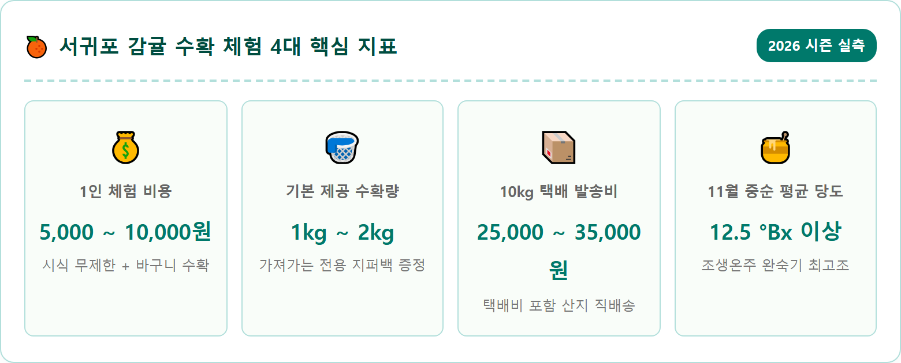
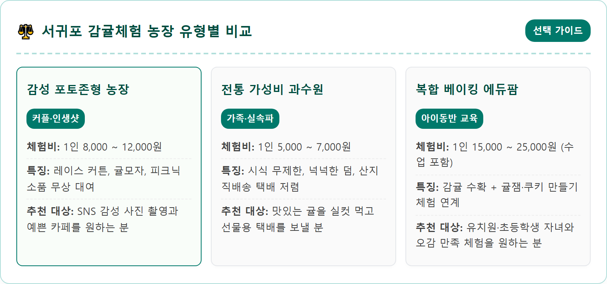
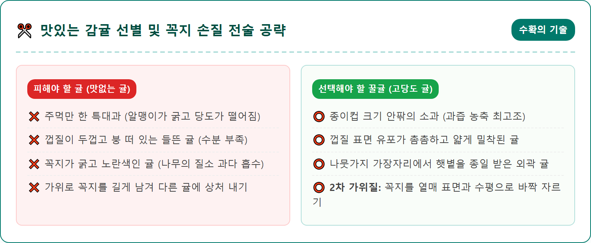
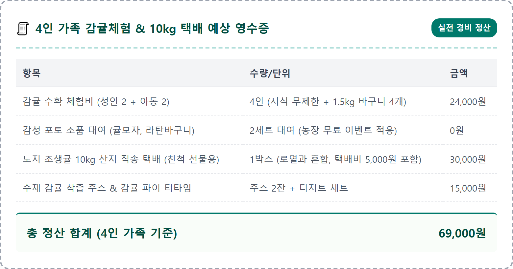
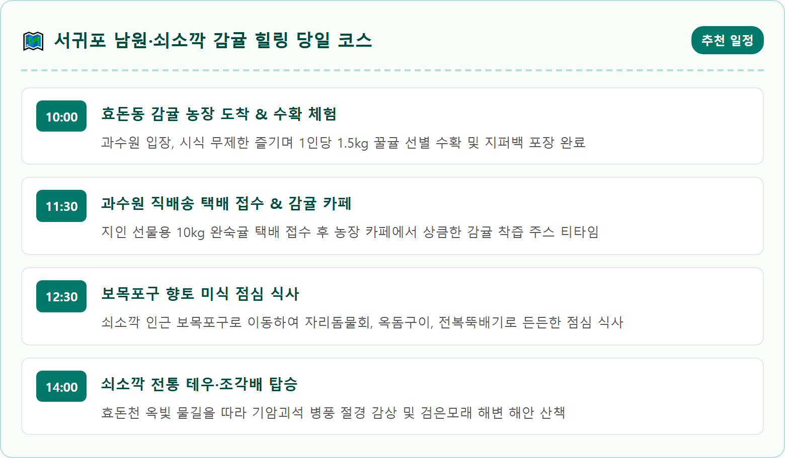
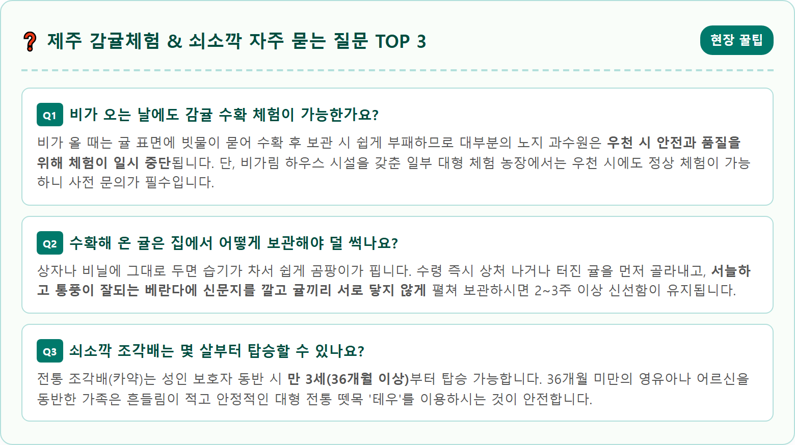

A sunny and vibrant late autumn tangerine orchard scene in Seogwipo, Jeju Island, South Korea. Lush green citrus trees overflowing with ripe, bright orange mandarins under clear blue sky with gentle sunlight. Traditional Jeju black volcanic stone walls surrounding the orchard. A wooden basket filled with freshly harvested mandarins resting on a rustic wooden table. A smiling traveler gently holding harvesting shears, picking a juicy mandarin from a tree branch. Hallasan mountain faintly visible in the soft distant background. Professional travel photography, warm colors, rich depth of field, 8k resolution, 1:1 aspect ratio.

가을이 깊어가는 11월, 제주도 서귀포 일대는 나뭇가지마다 주홍빛 열매가 탐스럽게 매달려 온 섬이 황금빛으로 물듭니다. 제주도 전역에서 감귤이 재배되지만, 그중에서도 '서귀포 감귤'이 독보적인 명성과 높은 당도를 자랑하는 데는 천혜의 자연조건이 있습니다.
한라산이 북쪽에서 불어오는 차가운 북풍을 든든하게 막아주고, 남쪽 바다에서 불어오는 따뜻한 해풍과 연중 가장 긴 일조량이 서귀포 남원, 효돈, 위미 일대의 과수원을 감싸기 때문입니다. 일교차가 크고 배수가 잘되는 화산회토 토양 덕분에 감귤의 산도는 자연스럽게 낮아지고 당도는 농축되어 11월 중순이 되면 평균 12~13브릭스(Brix)에 달하는 꿀맛 조생귤이 완성됩니다.
수퍼마켓에서 사 먹는 귤과 과수원 나무에서 방금 가위로 똑 따서 껍질을 까먹는 귤의 맛은 비교할 수 없을 만큼 다릅니다. 손끝에 진하게 배어드는 싱그러운 시트러스 향과 입안 가득 톡 터지는 풍부한 과즙은 오직 가을 제주 과수원 한복판에서만 누릴 수 있는 특별한 미식의 축복입니다.
서귀포에는 남원읍, 효돈동, 서호동, 안덕면 일대를 중심으로 수백 곳의 감귤 체험 농장이 운영되고 있습니다. 방문객의 여행 스타일에 따라 최적의 만족도를 얻으려면 농장의 유형과 특징을 미리 파악하고 선택하는 것이 중요합니다.
첫 번째 유형은 SNS 인증 사진을 중요하게 생각하는 2030 여행자와 커플들에게 인기 있는 '감성 포토존형 농장'입니다. 귤나무 사이사이에 하얀 레이스 커튼, 빈티지 피크닉 매트, 거울 포토존, 귤 모자와 라탄 바구니 등 아기자기한 소품을 배치하여 인생 사진을 남기기에 최적화되어 있습니다. 체험비는 1인 8,000~10,000원 선이며, 감성 카페를 함께 운영하는 곳이 많습니다.
두 번째 유형은 어르신이나 아이를 동반한 가족 단위 여행객에게 추천하는 '가성비 전통 농원'입니다. 화려한 인테리어보다는 넓은 과수원 면적과 맛있는 감귤 품종 관리에 집중하는 곳으로, 1인 5,000원의 저렴한 비용에 밭 안에서 배가 부를 때까지 무제한으로 귤을 따먹을 수 있는 넉넉한 인심이 매력입니다. 세 번째 유형은 풋귤청 만들기, 귤 잼 만들기, 감귤 타르트 베이킹 등 다양한 체험 클래스를 결합한 '복합 체험형 팜'입니다.

감귤 밭에 들어서면 사방에 매달린 수천 개의 귤 중에서 어떤 것을 따야 가장 달콤할지 고민하게 됩니다. 겉보기에 크고 탐스러운 귤이 맛있어 보이지만, 실제 당도 측정기로 재보면 정반대의 결과가 나옵니다.
맛있는 감귤의 첫 번째 조건은 '크기'입니다. 탁구공보다 약간 크고 일반 종이컵 바닥 크기 정도인 소과(2S~M 사이즈)가 껍질이 얇고 과즙이 농축되어 있어 가장 높은 당도를 자랑합니다. 어른 주먹만 한 대과는 수분이 많아 싱겁고 과육이 퍽퍽하기 쉽습니다.
두 번째는 껍질 표면의 '유포(기름샘)'입니다. 껍질을 자세히 들여다보았을 때 작은 점 같은 유포가 촘촘하고 매끄럽게 박혀 있으며, 햇볕을 듬뿍 받아 짙은 주황색을 띠는 귤을 골라야 합니다. 나무 아래쪽이나 그늘진 안쪽보다는 나뭇가지 바깥쪽, 하늘을 향해 햇빛을 온종일 받은 외곽 가지의 귤이 훨씬 답니다.

체험을 마친 후 바구니에 가득 담아온 귤은 농장에서 제공하는 지퍼백이나 비닐봉지에 차곡차곡 담아 가져가게 됩니다. 이때 가장 중요한 팁은 '2차 가위질'을 완벽하게 끝내는 것입니다. 나무에서 열매를 잘라낼 때 1cm가량 남겨둔 꼭지를 현장 수납대에서 가위로 과일 표면과 수평이 되도록 바짝 잘라내야(초록색 꼭지 단추만 남김) 지퍼백 안에서 다른 귤의 껍질을 찔러 상처가 나는 것을 방지할 수 있습니다.
직접 수확한 귤 외에 육지의 가족, 친지, 지인들에게 감귤을 선물하고 싶다면 농장에서 직접 운영하는 산지 직배송 택배를 이용하는 것이 훨씬 경제적이고 신선합니다. 대형 마트나 시장보다 유통 마진이 없어 가격이 저렴하며, 당일 아침에 수확하여 왁스 코팅이나 강제 착색을 거치지 않은 완숙 귤을 그대로 박스에 담아 보내줍니다.
10kg 1박스 기준 가격은 25,000~35,000원 선(택배비 4,000~5,000원 포함)이며, 5kg 소포장 박스도 선택할 수 있습니다. 제주도 특성상 날씨가 좋으면 발송 다음 날 혹은 이틀 뒤 육지 가정에 도착하므로, 집에서 신선한 제주 가을의 향기를 그대로 맛볼 수 있습니다.

남원읍이나 효돈동에서 감귤 수확을 마친 후 차로 10~15분만 이동하면 에메랄드빛 비경을 자랑하는 '쇠소깍'에 닿습니다. 서귀포 칠십리 해안의 숨은 비경인 쇠소깍은 한라산에서 발원한 효돈천의 맑은 담수와 남쪽 바다의 짠물이 만나 깊은 웅덩이를 이룬 천연 하구입니다.
양벽을 병풍처럼 둘러싼 기암괴석과 울창한 소나무 숲, 그리고 바닥까지 투명하게 비치는 옥빛 물결 위를 노 저어 가는 '전통 조각배(나룻배)'와 여러 사람이 함께 타는 제주 전통 뗏목 '테우' 체험은 쇠소깍 관광의 백미입니다. 늦가을 잔잔한 수면 위를 미끄러지듯 떠가며 협곡의 주상절리를 올려다보는 경험은 이국적인 정취를 물씬 풍깁니다.
조각배 체험은 현장 발권의 경우 주말에 대기 시간이 1~2시간 이상 발생할 수 있으므로, 감귤 농장으로 출발하기 전 온라인 예약 플랫폼을 통해 사전 예약을 완료해 두시는 것이 시간을 아끼는 비결입니다. 배를 타지 않더라도 효돈천을 따라 잘 정비된 나무 데크 산책로를 걷는 것만으로도 충분히 아름다운 풍경을 즐길 수 있습니다.

쇠소깍 하류가 바다와 만나는 지점에는 현무암 부서진 가루로 이루어진 '하효 쇠소깍 검은모래 해변'이 넓게 펼쳐져 있습니다. 일반적인 하얀 백사장과 달리 흑진주처럼 짙은 검은빛을 띠는 모래사장은 푸른 파도와 극적인 대비를 이루며 독특한 시각적 감동을 선사합니다.
해변가를 따라 조성된 산책로에는 제주 해녀들의 삶을 엿볼 수 있는 불턱(해녀들이 옷을 갈아입고 불을 쬐던 돌담 쉼터)과 아기자기한 목재 벤치가 마련되어 있습니다. 신발을 벗고 부드러운 검은 모래를 맨발로 밟으며 파도 소리를 듣는 것만으로도 발끝에서부터 전신으로 시원한 힐링 에너지가 전달됩니다.
해변 입구에는 서귀포 바다를 한눈에 조망할 수 있는 전망 데크와 알록달록한 포토존 조형물이 설치되어 있어 가족, 연인과 함께 기념사진을 남기기에 좋습니다. 해질 무렵 쇠소깍 등대 방파제 쪽으로 걸어가면 서귀포 앞바다 섶섬과 문섬 위로 지는 붉은 노을을 감상할 수 있습니다.
쇠소깍에서 서쪽으로 해안도로를 따라 차로 5분만 달리면 고즈넉한 어촌 마을인 '보목포구'가 나타납니다. 보목포구는 제주도에서 자리돔(자리)이 가장 부드럽고 맛있기로 손꼽히는 어항으로, 마을 어귀마다 오랜 세월 해녀와 어부들이 운영해 온 소박한 로컬 식당들이 모여 있습니다.
11월 늦가을에 맛보는 자리물회는 뼈째 썰어낸 고소한 자리돔에 구수한 재래 된장과 상큼한 제피잎을 넣어 비린내 없이 시원하고 깊은 맛을 냅니다. 찬 음식이 부담스러운 분이라면 바삭하게 구워낸 옥돔구이나 싱싱한 활전복과 딱새우, 조개가 뚝배기 넘치도록 들어간 '해물뚝배기'를 추천합니다.
식사 후 포구 방파제를 따라 천천히 걸으며 정박해 있는 고깃배들과 맑은 바닷속을 헤엄치는 물고기들을 구경하는 것도 소소한 즐거움입니다. 관광객으로 붐비는 대형 식당가를 벗어나 제주의 진짜 어촌 정취를 오감으로 느낄 수 있는 숨은 미식 명소입니다.

감귤밭은 그 자체로 거대한 천연 스튜디오입니다. 싱그러운 초록 잎사귀와 선명한 주황색 귤, 그리고 검은 현무암 돌담이 만들어내는 보색 대비는 사진을 찍었을 때 인물을 화사하게 돋보이게 만듭니다.
의상은 흰색이나 아이보리, 베이지, 연청색 등 밝은 무채색 계열의 옷을 추천합니다. 주황색과 대비되어 사진 속에서 인물이 한층 또렷하게 부각됩니다. 농장에서 대여해 주는 귤 모자나 니트 머리띠, 감귤 선글라스, 라탄 바구니를 소품으로 활용하면 위트 있고 사랑스러운 사진을 연출할 수 있습니다.
촬영 구도는 카메라를 귤나무 아래쪽으로 낮추어 로우 앵글로 잡으면, 주홍빛 귤들이 프레임 상단을 가득 메우며 마치 감귤 터널 속에 서 있는 듯한 풍성한 입체감을 연출할 수 있습니다. 햇살이 나뭇잎 사이로 부드럽게 쏟아지는 오전 10시~11시나 오후 3시~4시의 사광(비스듬한 햇빛)을 활용하면 따스하고 몽환적인 가을 감성을 완벽하게 담아낼 수 있습니다.
서귀포 감귤체험 농장과 쇠소깍은 제주국제공항에서 평화로나 번영로를 타고 남쪽으로 약 50분~1시간 정도 달리면 편리하게 도착할 수 있습니다.
대부분의 사설 감귤 농장은 과수원 입구에 10~20대 규모의 무료 자갈 주차장을 갖추고 있으며, 쇠소깍의 경우 입구에 제1공영주차장(유료)과 도보 5분 거리의 제2, 제3공영주차장(무료 개방)이 넓게 마련되어 있습니다. 주말 오후 혼잡 시간대에는 쇠소깍 해변 방면 도로변이 혼잡할 수 있으므로 제2무료주차장을 이용하시는 것이 주차 스트레스를 줄이는 요령입니다.
대중교통을 이용하실 경우 제주공항에서 181번, 182번 급행버스를 탑승하여 서귀포 환승정류장(중앙로터리)에서 하차한 뒤, 효돈·남원 방면 시내버스(231번, 232번, 510번 등)로 환승하시면 농장 입구 및 쇠소깍 정류장까지 편리하게 이동하실 수 있습니다.
| 구분 | 세부 내용 | 여행자 꿀팁 |
|---|---|---|
| 권장 위치 | 제주특별자치도 서귀포시 남원읍 및 효돈동 일대 | 내비: 쇠소깍 또는 서귀포시 효돈순환로 인근 농장 |
| 감귤체험 운영 | 매일 09:30 ~ 17:30 (입장 마감 16:30) | 11월 중순 조생온주 노지귤 최성기 |
| 체험 요금 | 1인 5,000원 ~ 10,000원 선 | 시식 무제한 + 1.5kg 수확 전용백 포함 |
| 쇠소깍 조각배 | 성인 2인승 20,000원 / 테우 성인 10,000원 | 사전 온라인 예약 또는 오전 일찍 현장 발권 |
| 주차 안내 | 농장 전용 주차장 무료 / 쇠소깍 제2·3주차장 무료 | 대형 승합차 및 렌터카 편리하게 주차 가능 |